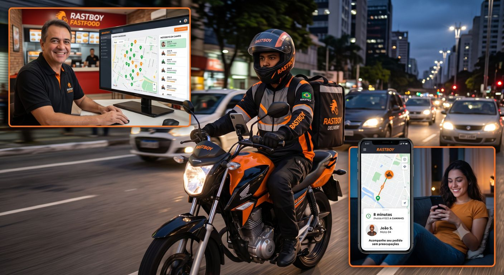

Sua entrega, rastreada do início ao fim — para cada tipo de operação
A Sigacerto Technology desenvolve sistemas de rastreamento e roteirização sob medida para o tipo de operação — sem aplicativo, sem hardware extra, direto no navegador. Escolha abaixo o produto feito para o seu negócio.
Qual dessas dores é a sua?
Dois produtos prontos, cada um pensado para um tipo de operação diferente. Escolha o seu e conheça a solução completa.

Rastboy
Para pizzarias e food service com entrega própria que precisam acabar com o "cadê meu pedido?".
- Telefone não para de tocar com clientes perguntando pelo pedido
- Motoboy some no caminho e ninguém na loja sabe onde ele está
- Dependência de aplicativos de terceiros caros e genéricos

RotaCerta Roteirizador
Para depósitos de material de construção e transportadoras de pequeno e médio porte.
- Motorista se perde em obra sem endereço formal
- Tempo de descarga genérico, sem considerar o tipo de material
- ERP desatualizado, sem integração com a roteirização
O que os dois sistemas têm em comum
A Sigacerto não vende "um sistema de rastreamento genérico" — desenvolve soluções sob medida para o tipo de operação, com a mesma base sólida por trás.
Sem aplicativo para instalar
Motoboy ou motorista abre um link e já está rastreando — nada para baixar, nada para configurar.
Link individual e seguro
Quem recebe acompanha a entrega por um link só dele, sem senha e sem expor dados de outros clientes.
100% via navegador
Rastreamento em tempo real que funciona no celular de quem entrega e de quem recebe, sem hardware extra.
Implantação com suporte da Sigacerto
Configuração, treinamento da equipe e suporte técnico — a mesma consultoria por trás dos dois produtos.
Consultoria de tecnologia, não só venda de licença
A Sigacerto Technology já atua com ERP e PDV para pequenas e médias empresas — o rastreamento e a roteirização de entregas são uma extensão natural desse trabalho, com o mesmo suporte próximo e o mesmo compromisso de sempre.
Os dois sistemas em ação
Assista aos vídeos de demonstração de cada produto e veja como fica simples rastrear a entrega do início ao fim.
Rastboy — rastreamento para delivery de comida
RotaCerta — roteirização para construção e transportadoras
Comparativo rápido: tipo de operação → produto indicado
| Tipo de operação | Dor comum | Produto indicado |
|---|---|---|
| Pizzaria, hamburgueria ou food service com entrega própria | "Cadê meu pedido?" e motoboy sem rastreio | Rastboy |
| Depósito de material de construção | Motorista perdido em obra sem endereço formal | RotaCerta |
| Transportadora de pequeno ou médio porte | Tempo de descarga não calculado e ERP desatualizado | RotaCerta |
| Empresa com food service e transporte de carga ao mesmo tempo | As duas dores ao mesmo tempo, em operações diferentes | Rastboy + RotaCerta |
Dúvidas sobre o hub de logística
Vocês atendem os dois tipos de operação ao mesmo tempo?
Sim. Se a sua empresa tem, por exemplo, um food service com entrega própria e também transporta carga, dá para contratar o Rastboy e o RotaCerta juntos — cada um resolvendo a dor específica da sua operação.
Qual a diferença entre o Rastboy e o RotaCerta?
O Rastboy foi feito para pizzarias e food service que entregam com motoboy próprio, com foco em rotas simples de delivery. O RotaCerta foi feito para depósitos de material de construção e transportadoras, com geolocalização de obra sem endereço formal, tempo de descarga por tipo de material e integração com ERP. Os dois usam a mesma base de rastreamento em tempo real via navegador, sem aplicativo.
Não sei qual dos dois se encaixa na minha operação, como decido?
Use o comparativo desta página ou fale direto com a gente no WhatsApp: em poucos minutos identificamos o tipo da sua operação e indicamos o produto certo, sem compromisso.
Preciso contratar os dois produtos para ter suporte da Sigacerto?
Não. Cada produto é vendido e implantado separadamente, com o seu próprio plano e suporte técnico. O hub existe só para te ajudar a identificar qual dos dois é o certo para a sua operação.
Os dois sistemas têm planos e preços parecidos?
Cada produto tem sua própria tabela de planos, pensada para o volume e o tipo de operação de cada segmento. Os valores completos e as condições estão nas páginas do Rastboy e do RotaCerta.
Fale com a gente e a gente te indica
Conte pra gente como funciona a sua operação — em poucos minutos você já sai sabendo se o Rastboy, o RotaCerta ou os dois juntos são o caminho certo.